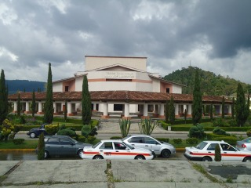
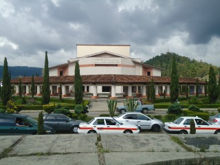
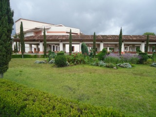
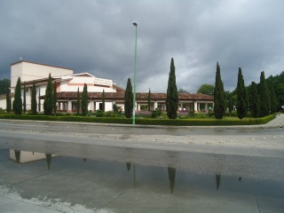
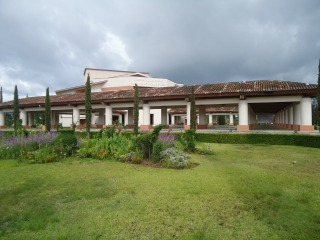

El Teatro de la Ciudad Hermanos Domínguez, fue inaugurado el 24 de junio de 1994. Se consiguió su construcción mediante las gestiones realizadas por el Patronato Pro-Teatro de la Ciudad formado durante la Administración Municipal de Jorge Mario Mario Lescieur Talavera, quien por cierto recordó esos momentos de gestión para la realización del mismo.
Se encuentra ubicado en Diagonal Hnos. Paniagua en el Barrio de San Ramón
Si usted se encuentra ubicado en la plaza de la paz viendo de frente hacia la catedral puede caminar hacia atrás como referencia encontrará frente a la plaza el asilo de ancianos San Juan de Dios camine sobre esa acera hasta llegar a la esquina pasando por Bancomer cruce la calle y continue caminando una cuadra mas pasando por scotiabank y al llegar a la esquina de vuelta a la derecha y camine sobre la calle diego de mazariegos hasta llegar a la diagonal hermanos paniagua, como referencia usted pasará por el seguro social y encontrará plaza san cristóbal, frente a este se ubica el teatro de la ciudad.
En el lugar usted puede realizar actividades como:
* Fotografía
* Visita a lugares históricos
* Visita a centros culturales
* Visita a teatros
* Asistencia a congresos y seminarios
* Asistencia a eventos científicos
* asistencia a eventos culturales
* Asistencia a festivales de cine
* Asistencia a festivales de música
* Asistencia a festivales de rock
* Asistencia a festivales folklóricos
* Asistencia a festivales de ópera y ballet





posicione el mouse sobre las imágenes